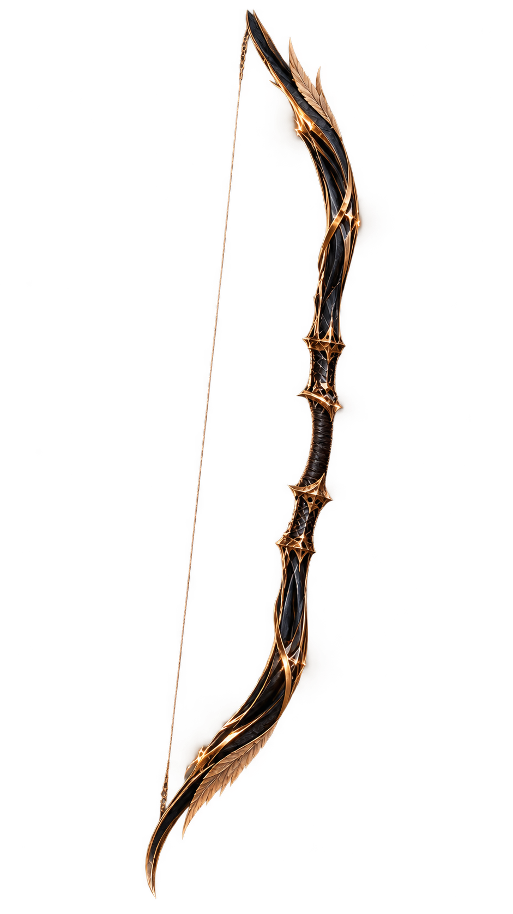
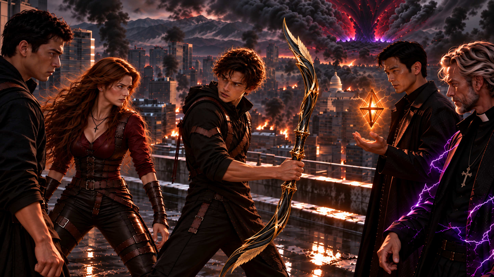
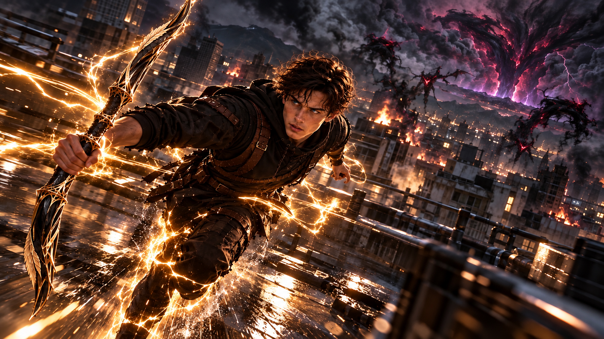
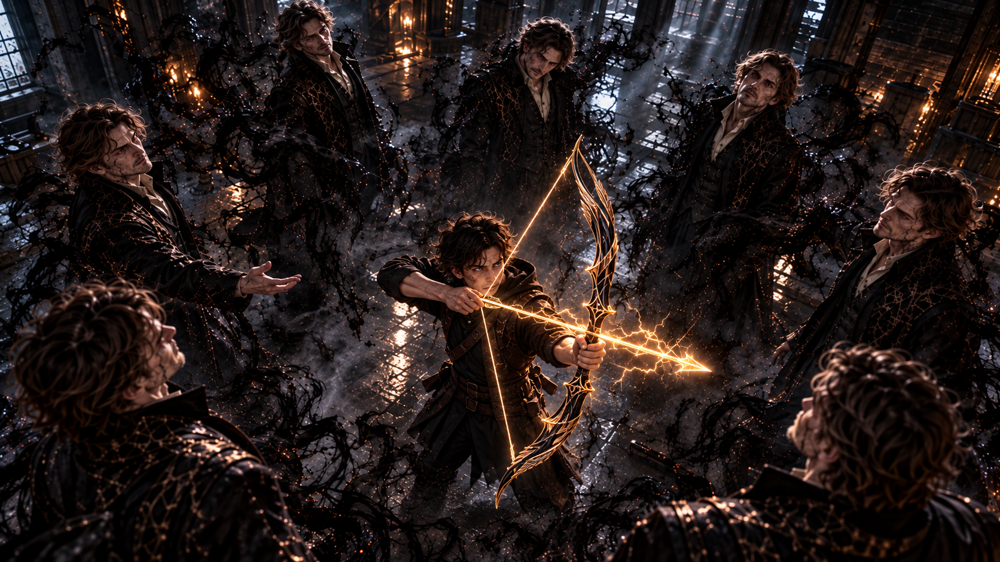
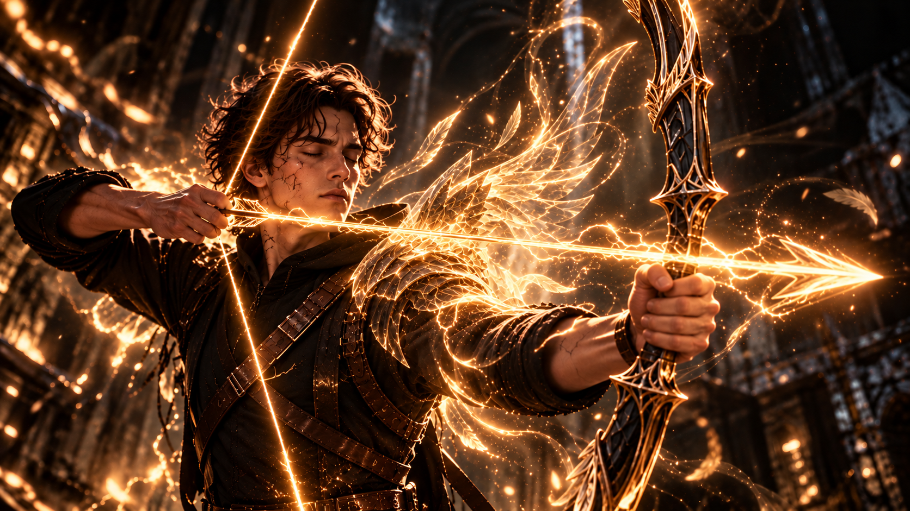
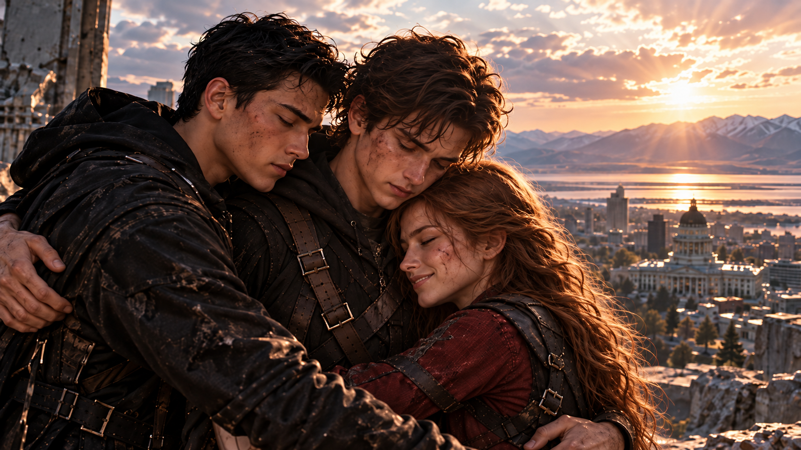

WHITE MAGIC ART STUDIO
第二十四章
曙光
美國・猶他州・鹽湖城・東湖教會
一道耀眼的金光，驟然從主堂中央綻放。
原本盤踞在天花板與牆壁上的黑霧，彷彿遭到某股無形的力量驅逐，沿著牆角迅速退散。
金光穿過長椅之間的走道，照亮了講台，也讓那座幾乎被黑暗吞沒的十字架，重新顯露出輪廓。
柴克猛然睜開眼睛。
熟悉的主堂映入眼簾。
破損的門扉、散落一地的木屑，以及尚未完全消散的黑霧，都在提醒著他——
他回來了。
剛才在森林裡經歷的一切，並不是夢。
柴克緩緩低下頭。
一把修長的黑金色長弓，正安靜地握在他的手中。

漆黑的金屬弓身泛著細緻光澤，纖細的金色雕紋沿著上下弓臂蜿蜒延伸。兩端優雅地向外反曲，少量修長的金屬羽片順著弓身線條交錯相融，宛如一對收攏的天使羽翼。
中央握柄纏繞著深色皮革，金色鏤空飾件精巧地銜接著弓臂與握把。
沒有多餘的裝飾。
卻讓人一眼便能感受到它與眾不同的存在。
柴克試著收緊手指。
一縷柔和的金光隨即沿著弓身流動，細若絲線的光芒輕輕纏繞過那些羽片，彷彿回應著他的觸碰。
柴克怔怔望著它。
「迦勒……」
他輕聲喚出那個名字。
弓身上的金色紋路微微亮起。
那一瞬間，柴克彷彿又看見了森林裡的拉比。
祂溫柔的笑容，以及最後對自己說的那句話，依然清晰得像是剛剛才聽見。
你，永遠不是一個人戰鬥。
「怎麼可能……」
一道低沉的聲音，將柴克拉回現實。
他抬起頭。
魔神正站在講台前，難以置信地望著他。
那張屬於父親詹姆斯的臉上，第一次失去了原有的從容。
牠的視線停留在迦勒身上，又緩緩移向四周逐漸消散的黑霧。
「你竟然真的……」
魔神的聲音戛然而止。
因為就在這時，一道熟悉的聲音，忽然從柴克身後響起。
「看來，詹姆斯對你的信心，確實不是空穴來風。」
柴克猛然回頭。
主堂後方，一名身穿黑色風衣的男子正緩緩走來。
「雷叔叔？！」
雷・安德烈的臉色仍有些蒼白，神情卻比先前平靜許多。
他望著柴克手中的長弓，嘴角微微揚起。
「你果然是能夠扭轉這一切的關鍵。」
「你之前到底對詹姆斯有多不信任啊？他不是你哥嗎？」
另一道聲音緊接著傳來。
柴克愣了一下。
「傑西？！」
傑西從雷的身後走出，雙手插在口袋裡，臉上掛著那抹再熟悉不過的笑容。
「怎麼？」
他挑了挑眉。
「見到我很意外嗎？」
柴克張了張嘴，卻一時說不出話來。
然而，真正讓他驚訝的事情，還在後頭。
「Z！」
一道清脆的呼喚從側邊傳來。
柴克猛然轉頭。
「安娜？！」
安娜正快步朝他走來。
她的長髮有些凌亂，衣服上也留下了戰鬥的痕跡，但那雙藍色眼睛依然明亮。
而在她身旁，克里斯正靜靜望著他。
「克里斯……」
柴克怔在原地。
他看看哥哥，又看看妹妹，像是還不敢相信眼前的一切。
「你們……不是被魔神……」
「吞進黑霧裡了？」
克里斯替他把話說完。
柴克用力點頭。
「對啊！」
安娜輕輕笑了。
「我們也以為自己出不來了。」
她停頓了一下，望向主堂裡尚未散盡的黑霧。
「直到剛才，有一道光照了進來。」
克里斯走到弟弟面前。
「柴克，你還記得嗎？」
「什麼？」
「我以前告訴過你，當雷翼出現時，將為繼承雷之力的聖術師帶來曙光。」
柴克怔怔望著他。
克里斯的目光柔和下來。
「尤其是在最黑暗的時刻。」
「而你剛才帶來的，就是那道光。」
傑西接著說道。
「當你真正接受自己的身分，拉比便能透過你，讓那道光顯現出來。」
他望向主堂四周。
「那道光不只照亮了你，也讓我們在黑暗裡找到了方向。」
柴克低下頭。
迦勒安靜地躺在他的掌心。
原來如此。
拉比說過，他永遠不是一個人戰鬥。
當時的他，還以為那只是祂給予自己的鼓勵。
如今才明白，那句話竟然有著如此真實的意義。
「你真的做得很好，柴克。」
傑西走近，輕輕拍了拍他的肩膀。
柴克抬起頭。
這一次，傑西沒有開玩笑。
「你父親一定會以你為傲。」
柴克的呼吸微微一滯。
他下意識望向講台前的魔神。
那張熟悉的臉，仍然屬於父親。
但他知道，真正的詹姆斯，絕不會用那樣的眼神看著自己。
柴克收回目光，輕輕點頭。
「嗯……」
克里斯則注意到了他手中的長弓。
「而且……」
他伸出手，指尖輕輕碰了碰迦勒的弓臂。
「看來你終於找到自己的『魔杖』了。」
柴克忍不住笑了。
克里斯忽然轉頭看向安娜。
「這樣一來，妳是不是欠我三十美元？」
安娜立刻瞪了他一眼。
「閉嘴！明明是你逼我賭的！」
「可是我賭贏了。」
「我也說過他會是術器使好嗎！」
「妳當時可不是這樣講的。」
「克里斯！」
傑西終於忍不住笑出聲。
「你們幾個，還真是一點都沒變。」
柴克望著哥哥與妹妹，嘴角也跟著揚起。
剛才在黑霧裡，他甚至不敢奢望還能聽見他們這樣拌嘴。
如今，熟悉的聲音就在身旁。
而他終於不再只是那個等待別人前來拯救的孩子。
柴克重新望向手中的迦勒。
曾經，他以為自己必須帶回安德莉雅留下的皮斯提斯，才有機會對抗魔神。
但現在他明白了。
自己真正需要的，並不是另一位雷翼留下的力量。
而是找到屬於自己的信仰。
就在這時——
「夠了！」
魔神的怒吼猛然響徹主堂。
眾人同時轉頭。
牠站在講台前，臉上的神情已經徹底陰沉下來。
「你們以為看見了一點光，就能改變什麼嗎？！」
魔神猛然張開雙手。
「你們終究還是會陷入黑暗！」
濃重的黑霧再次從牠身後湧起。
然而，下一瞬間——
牠的右手忽然僵住了。
魔神微微一怔。
原本應該隨著手勢向前撲出的黑霧，竟停滯在半空中。
牠猛然握緊手掌。
指節卻不受控制地顫抖起來。
「……什麼？」
魔神再次抬手。
黑霧劇烈翻騰，卻始終無法按照牠的意志凝聚。
彷彿在那具身體深處，正有另一股力量，拼命阻止牠。
牠低頭望著自己的右手。
那張屬於詹姆斯的臉上，第一次浮現出真正的驚疑。
「不可能……」
傑西靜靜望著牠。
片刻後，緩緩開口。
「別忘了。」
魔神猛然抬頭。
傑西的目光落在牠的身體上。
「現在困住你的這具身體，本身也是一位繼承雷之力的人。」
雷的神情驟然一變。
「等等……」
他轉頭看向傑西。
「你的意思是……」
傑西沒有立即回答。
但柴克已經注意到，魔神的右手仍在微微顫抖。
那不是受傷。
也不像單純的力量失控。
柴克的心臟忽然重重跳了一下。
難道……
「閉嘴！」
魔神憤怒地咆哮。
牠猛然轉身，朝主堂側邊的玻璃窗揮出一掌。
砰！
玻璃瞬間碎裂。
無數碎片在半空中翻轉，隨即被黑霧包覆。
魔神的身影與那些碎片交錯融合，化作一道疾馳的黑影，猛然衝出教堂。
「牠要跑了！」
安娜立刻握緊艾連。
克里斯也向前跨出一步。
然而，眾人還來不及追上去，窗外便傳來一陣低沉的嘶吼。
柴克猛然轉頭。
破碎的窗框外，一隻惡魔正攀附在牆面上，緩緩探出身體。
緊接著，第二隻、第三隻……
越來越多的黑影從窗框與建築縫隙間湧入。
牠們越過長椅，沿著牆壁迅速爬行。
轉眼之間，整座主堂已經被惡魔包圍。
雷皺起眉頭。
阿法在他身旁緩緩浮起。
「傑西。」
他環顧四周。
「這麼多惡魔衝進教堂，算是合情合理嗎？」
傑西掃視了一眼敵群。
「教堂只是水泥和磚石建成的建築。」
他平靜地回答。
「本來就不是什麼能自動驅魔的神聖屏障。」
雷看了他一眼。
「我知道，約爾森牧師。」
金色雷電沿著他的指尖流動。
「我只是想問，有沒有比較聰明的對策。」
他望向破碎的窗戶。
「要不要分成兩隊？一隊追魔神，一隊留在這裡？」
「不用了。」
柴克突然開口。
眾人同時看向他。
柴克已經舉起迦勒。
「我們五個一起上。」
他望著那些逐漸逼近的惡魔。
「幾秒鐘就能清空這裡。」
克里斯微微挑眉。
「柴克？」
柴克沒有回答。
他只是握緊中央的皮革握柄，緩緩抬起另一隻手。
就像在森林裡練習過無數次那樣。
呼吸。
穩住肩膀。
將手指移向原本應該存在弓弦的位置。
下一瞬間——
一道纖細的金光，忽然在上下弓臂之間凝聚。
金色弓弦隨著他的動作逐漸顯現。
柴克怔了一瞬。
「……弦自己出現了。」
他試著將弓弦向後拉開。
細小的金色電流立刻沿著指尖聚集，彼此交織，逐漸凝聚成一支雷電箭矢。
柴克睜大眼睛。
那股力量不再像過去一樣，需要他拼命喚起某種情緒才能勉強觸及。
它就在自己的手中。
彷彿只要他願意相信，便能得到回應。
柴克深吸一口氣。
瞄準主堂中央的一隻惡魔。
然後——
鬆開手指。
咻！
金色雷箭瞬間破空而出。
轟！
箭矢命中的瞬間，耀眼的雷光猛然爆發。
金色電流沿著地面向四周擴散，將附近數隻惡魔一併擊退。
黑影在雷光中迅速潰散，化為細碎的黑色塵埃。
整座主堂短暫地被照得通亮。
柴克緩緩放下長弓。
金色弓弦隨之消散。
他望著前方空出的走道，又低頭看向自己的手。
「哇……」
克里斯站在一旁，忍不住笑了。
「看來我得小心一點了。」
柴克轉頭看他。
「什麼？」
克里斯望著弟弟手中的長弓。
「你的聖術能力，搞不好很快就會追上我。」
柴克笑了。
「那你可要加油了。」
「你這小子……」
克里斯輕輕搖頭。
但那雙眼睛裡，藏不住欣慰。
「好吧。」
他抬起手。
綠色程式碼沿著手臂逐漸浮現。
「那就讓我看看，你能做到多少。」
柴克重新望向前方。
那些原本逼近的惡魔，正因為剛才的雷箭而短暫停頓。
他握緊迦勒。
這一次，他沒有感到害怕。
因為身旁站著的，是他最信任的人。
「我們上！」
傑西率先開口。
下一瞬間，紫色雷光從他掌心綻放。
五位雷之聖術師，同時迎向惡魔。
「阿法！」
雷抬起右臂。
黑色鑽石般的術器迅速升空，金色雷電從它周圍展開，形成一道弧形屏障。
第一波撲來的惡魔，瞬間被震退。
「克里斯，左邊！」
安娜的聲音響起。
「看到了！」
克里斯向前踏出一步。
綠色程式碼迅速在空中排列、重組。
數道由數據構成的光牆拔地而起，封住惡魔側邊的退路。
那些黑影試圖轉向，卻發現自己已經被困在狹窄的走道之間。
「安娜！」
「交給我！」
安娜握緊艾連，迅速衝入敵群。
黑金色的雙頭劍在她手中劃出俐落的弧線。
金色雷光沿著兩端劍刃流動，隨著她的步伐接連擊中被困住的惡魔。
轟！
雷光爆發。
數道黑影瞬間潰散。
「漂亮！」
柴克忍不住喊道。
「別只顧著看！」
克里斯頭也不回地提醒。
「你後面！」
柴克猛然轉身。
一隻惡魔正從長椅後方撲來。
他立刻舉起迦勒。
金色弓弦隨著拉弓動作凝聚。
咻！
雷箭精準命中。
惡魔的身影在半空中潰散。
柴克鬆了一口氣。
「謝啦！」
「專心點！」
克里斯笑著回應。
另一側，雷的屏障仍然穩穩守住主堂中央。
阿法懸浮在半空，金色雷電不斷沿著屏障邊緣流動。
每當惡魔試圖突破，便會被強烈的電流震退。
「柴克！」
雷忽然開口。
「右邊的交給你！」
柴克立刻轉身。
「收到！」
他抬起迦勒。
一支金色雷箭迅速凝聚。
這一次，他沒有急著放箭。
而是先調整呼吸，等到惡魔進入最佳角度。
然後——
放手。
金色雷箭掠過屏障邊緣，在敵群中央爆發。
雷光向外擴散，將數隻惡魔一併擊退。
雷看了他一眼。
「不錯。」
柴克忍不住露出笑容。
就在這時，數隻惡魔突然從主堂另一側湧出。
傑西緩緩抬起手。
「好了。」
他望著那些逼近的黑影。
「你們也差不多該安靜了。」
紫色雷電從指尖竄出。
但這一次，電流並沒有立刻向外爆發。
它們先沿著附近散落的金屬碎片與破損座椅流動，將那些物件的形體短暫分解成細碎的紫色能量。
下一瞬間，能量在惡魔前方重新凝聚。
數道紫色光芒交錯形成阻隔，封住了牠們的去路。
傑西抬起另一隻手。
「安娜！」
「來了！」
安娜迅速轉身。
艾連的金色雷光沿著劍刃延伸。
她踏上克里斯剛剛凝聚出的綠色數據階梯，借力躍起。
下一瞬間，雙頭劍劃出一道俐落的金色弧線。
轟！
最後一批惡魔，在金色與紫色雷光交錯之間迅速潰散。
主堂終於恢復寂靜。
殘留在空氣中的電流，逐漸消失。
五人站在長椅之間，彼此確認狀況。
沒有人受傷。
柴克低頭望著手中的迦勒。
弓身上的金色紋路，正隨著他的呼吸緩緩暗下。
他仍然覺得有些不可思議。
「真的……做到了。」
克里斯走到他身旁。
「我早就說過。」
柴克抬頭看他。
哥哥輕輕笑了。
「你可以的。」
柴克也笑了。
這一次，他終於相信了。
傑西則已經走向破碎的窗邊。
遠方的鹽湖城，仍然被濃重的黑霧籠罩。
他望向天空，神情重新變得嚴肅。
「好了。」
傑西抬起手。
紫色雷光在指尖緩緩聚集。
「下一站。」
眾人還沒來得及開口，紫色電流便迅速延伸，將五人的身影包圍。
下一瞬間——
主堂裡，再次恢復寂靜。
東湖教會・屋頂
一道紫色雷光，驟然在教會屋頂中央綻放。
柴克重新站穩時，迎面而來的是一陣強風。
他下意識握緊迦勒，抬起頭。
整座鹽湖城，正展現在他的眼前。
濃重的黑霧仍然籠罩著城市。
原本應該明亮的天空，如今被大片陰影遮蔽。遠方的街道與建築在霧氣中若隱若現，偶爾有火光從街區之間亮起。
即使教會裡的黑暗已經散去，這場災難仍未結束。
雷走到屋簷邊緣。
阿法懸浮在他身旁，散發著微弱的金光。
「魔神在那個方向。」
他抬手指向北方。
那裡的黑霧最為濃厚，幾乎與天空連成一片。
克里斯順著他的方向望去。
「傑西，快送我們到——」
「等等！」
柴克突然開口。
眾人回頭看他。
柴克站在屋簷旁，目光卻沒有停留在北方。
他望著下方的街道。
「你們看其他地方。」
眾人順著他的視線望去。
街道上，仍有大量惡魔在黑霧間遊蕩。
牠們穿過廢棄的車輛，攀附在建築外牆，有些甚至正試圖闖入路旁的商店與住宅。
遠處不時傳來碰撞聲與低沉的嘶吼。
然而，整座城市幾乎看不見任何市民。
那份異常的寂靜，比惡魔的叫聲更加令人不安。
柴克緩緩握緊長弓。
他想起那些被黑霧吞沒的人們。
想起曾經努力保護這座城市的聖術師。
還有至今仍下落不明的潔西卡，以及其他可能正在等待救援的夥伴。
如果他們五個人全都追著魔神離開蟲……
那麼，剩下的鹽湖城呢？
柴克深吸了一氣。
「現在整個鹽湖城都需要我們。」
眾人安靜下來。
柴克轉過身，望向哥哥、妹妹，以及身旁的兩位長輩。
「所以……」
他抬起頭。
「魔神交給我。」
屋頂上的風聲，彷彿在那一瞬間變得格外清晰。

安娜率先皺起眉頭。
「柴克，你認真的？」
「嗯。」
「可是牠——」
「我知道。」
柴克輕聲打斷她。
「我知道牠有多危險。」
安娜怔了一下。
柴克望著妹妹。
「但現在，城裡還有很多人需要幫忙。」
他又看向遠方。
「我們不能只顧著追牠。」
克里斯始終沒有說話。
他的目光停留在柴克身上，像是在確認弟弟究竟明不明白自己剛才說了什麼。
過了片刻，他終於開口。
「柴克。」
「嗯？」
「你確定要一個人去？」
柴克點頭。
「我想試試看。」
克里斯微微皺眉。
「這不是練習。」
「我知道。」
「牠可不是普通的惡魔。」
「我也知道。」
柴克沒有迴避哥哥的目光。
「可是克里斯……」
他停頓了一下。
「如果我們一直只想著保護彼此，其他人怎麼辦？」
克里斯怔住了。
柴克低頭望向迦勒。
「以前的我，總覺得自己什麼都做不到。」
「每次遇到危險，都只能等你們來救我。」
他輕輕收緊握柄。
「可是現在，我終於有能力做點什麼了。」
柴克重新抬起頭。
「我不想再只是被保護的那個人。」
克里斯望著他。
那一瞬間，他彷彿又看見了那個總是跟在自己身後、吵著要一起練習射箭的弟弟。
但眼前的柴克，已經不再是當年的孩子。
他仍然會害怕。
仍然不清楚接下來會發生什麼事。
可即使如此，他依然選擇向前。
傑西站在一旁，忽然輕輕笑了。
「真沒想到……」
眾人轉頭看他。
「這些年來，我們一直保護的那個孩子，現在竟然會主動說出這種話。」
柴克有些不好意思地笑了。
「別這樣講啦……」
雷沒有立即表態。
他只是走到柴克身旁，望向北方那片翻騰的黑霧。
片刻後，伸出手，輕輕拍了拍柴克的肩膀。
「既然決定了，就別忘記你為什麼要去。」
柴克抬頭望著叔叔。
雷的神情十分平靜。
「不是為了證明自己有多強。」
他停頓了一下。
「而是為了守護你真正想守護的東西。」
柴克怔了一瞬。
隨即點頭。
「我知道。」
雷收回手。
阿法的金光再次亮起。
「那麼，我從上空巡查。」
他望向遠方的街區。
「找出潔西卡與其他聖術師的蹤跡，順便清除附近的惡魔。」
金色雷電沿著他的身體迅速流動。
下一瞬間，雷的身影緩緩升空。
「你們也小心。」
話音剛落，他便化作金光，朝城市另一端疾馳而去。
安娜望著叔叔離開的方向，又轉頭看向柴克。
她似乎還想說些什麼。
但最後，只是輕輕嘆了口氣。
「好吧。」
她握緊艾連。
「那東邊交給我。」
柴克望著妹妹。
「安娜。」
「幹嘛？」
「妳也要小心。」
安娜微微一怔。
隨即笑了。
「這句話應該是我要對你說吧？」
她伸出手，輕輕拍了一下柴克的手臂。
「別忘了，我是你的術器使大前輩。」
柴克笑了。
「知道啦。」
安娜轉頭看向傑西。
「麻煩了。」
傑西點頭。
紫色雷光迅速聚集。
隨著他抬手一揮，安娜的身影瞬間被電流包圍，消失在屋頂上。
克里斯緩緩走向柴克。
「柴克。」
「嗯？」
「我跟你去——」
克里斯還沒完整說完話。
然而——
咻！
一道金色雷箭突然從克里斯身旁掠過。
克里斯猛然回頭。
屋頂後方，一隻正準備撲來的惡魔，被雷箭精準擊中。
轟！
金光炸開。
那隻惡魔瞬間潰散。
克里斯怔了一下。
隨即轉頭看向弟弟。
柴克緩緩放下迦勒。
弓身上的金色光紋逐漸暗下。
「我一個人應付得來。」
克里斯沒有立即回答。
柴克伸手指向西方。
你去那邊吧。
「西邊？」
「嗯。」
柴克望向遠處較為開闊的街區。
「那裡的空間比較大，你的雷之演算法應該能發揮得更好。」
克里斯順著他的方向望去。
街道寬闊，建築之間留有足夠的距離。
確實很適合他施展大範圍的數據屏障。
克里斯又看向柴克。
沉默了片刻。
忽然笑了。
「……你知道我大你三歲吧？」
柴克也笑了。
「知道啦。」
「那你現在是在指揮我？」
「不行嗎？」
克里斯輕輕搖頭。
「你這小子……」
柴克朝哥哥揮揮手。
「快去啦！」
克里斯望著他。
這一次，他沒有再堅持同行。
他只是伸出拳頭。
柴克怔了一下。
隨即也伸出拳頭，輕輕與哥哥碰了一下。
「別讓我後悔相信你。」
克里斯說。
柴克望著他，認真地點頭。
「不會的。」
克里斯收回手。
他轉頭看向傑西。
「西邊就交給我吧。」
傑西點頭。
紫色雷光再次亮起。
克里斯的身影隨即消失。
屋頂上，只剩下柴克與傑西。
遠方的黑霧仍在翻騰。
強風吹過空蕩蕩的屋頂，掀起柴克的衣角。
他望著北方，緩緩握緊迦勒。
傑西走到他身旁。
「柴克。」
「嗯？」
「剩下的地方就交給我。」
他停頓了一下。
「不過……」
傑西轉頭望向他。
「等你真的見到魔神，你知道該怎麼做嗎？」
柴克沒有立即回答。
他抬起頭。
望向被黑霧遮蔽的天空。
過了片刻，才輕聲說：
「我當然不知道。」
傑西微微一怔。
柴克卻笑了。
「但是……」
他低頭望著手中的迦勒。
「祂知道。」
傑西靜靜望著他。
那一瞬間，他忽然明白了。
柴克並不是因為得到了新的術器，便以為自己已經無所不能。
恰恰相反。
他終於願意承認，有些事情，自己確實無法獨自完成。
但那並不代表他只能停在原地。
傑西露出笑容。
「嗯。」
他輕輕點頭。
「當然。」
柴克向前走去。
站上屋簷邊緣。
強風吹起他的黑色外套。
下方，是被黑霧籠罩的鹽湖城。
而更遠的北方，魔神仍在逃竄。
柴克最後看了一眼身後的傑西。
「那就拜託你了！」
傑西抬起雙手。
紫色雷電在掌間迅速交織。
柴克深吸了一口气。
隨即縱身躍下。
強風猛然灌入耳際。
屋頂、街道與遠方的建築，迅速在眼前拉開距離。
下一瞬間——
一道耀眼的紫色雷光從屋頂上疾射而出，追上了他的身影。
轟！
紫色電流瞬間將柴克包圍。
他只覺得眼前的景物猛然扭曲。
彷彿整個身體都在一瞬間化為細碎的電光。
等到視線重新清晰時——
他已經站在鹽湖城北方的一處街區。
柴克踉蹌了一步，連忙穩住身形。
「呼……」
他抬起頭。
不遠處的天空中，魔神正化作一團黑影，迅速向前飛去。
柴克望著那道身影。
緩緩握緊迦勒。
「找到你了。」
金色雷電沿著他的雙腿逐漸亮起。
下一瞬間——
柴克向前衝去。

鹽湖城・北城區
柴克從一棟建築的屋頂，躍向另一棟。
金色雷電沿著他的四肢流動。
每當腳掌踏上地面，便有細小的電光向外擴散。
他的速度越來越快。
街道、招牌與屋頂上的設備，不斷從身旁掠過。
然而，這份力量對他而言，仍然十分陌生。
柴克再次躍起。
這一次，他試圖跳上一處較高的屋頂。
金色雷電沿著雙腿猛然爆發。
「哇——！」
他整個人瞬間衝得比預期還高。
落地時，卻沒能掌握好角度。
腳下一滑。
整個人向前翻滾。
砰！
肩膀撞上水塔旁的金屬欄杆。
欄杆在衝擊下微微變形。
柴克連忙撐住身體，才沒有從屋頂邊緣跌下。
「痛……」
他皺著眉頭站起身。
低頭看向自己的雙腿。
淡金色的電流仍沿著身體表面流動。
他試著活動腳踝。
幸好沒有受傷。
「所以這就是……」
柴克抬起頭。
「雷之聖術？」
他望向遠方。
魔神仍在飛行。
柴克立刻重新奔跑。
這一次，他刻意放慢起跳前的動作。
試著感受電流如何沿著雙腿聚集。
不再只是讓力量一口氣爆發。
而是學著控制它。
下一瞬間，他猛然躍起。
身體迅速掠過兩棟建築之間的空隙。
柴克穩穩落在另一處屋頂。
「好！」
他忍不住笑了。
但很快便重新抬起迦勒。
金色弓弦隨著拉弓的動作凝聚。
一支雷箭在指尖成形。
柴克瞄準遠方的黑影。
鬆手。
咻！
雷箭劃破天空。
然而，魔神彷彿提前察覺了攻擊。
牠微微側身。
箭矢從旁掠過，在遠處炸開一道耀眼的金光。
柴克咬緊牙關。
「沒中……」
他再次向前奔跑。
跳上另一棟建築。
拉弓。
放箭。
第二支雷箭疾射而出。
魔神再次避開。
柴克沒有停下。
第三支。
第四支。
金色雷箭接連劃破天空。
雖然沒有任何一支真正命中，但魔神的飛行路線，開始出現細微的變化。
牠不再像先前那樣筆直向前。
黑霧在空中不斷轉向，彷彿正試圖擺脫身後的追擊。
柴克注意到了。
他重新調整呼吸，持續追趕。
「再一箭……」
他躍上一棟劇院的屋頂。
雙腳剛站穩，便再次拉滿弓弦。
金色雷電迅速凝聚。
然而，就在他準備放箭的瞬間——
遠方的魔神突然劇烈晃動。
柴克怔住。
「……什麼？」
魔神的飛行姿態變得異常。
牠試圖重新升高，身體卻像是被某股力量拉住，無法維持原本的方向。
黑霧在牠身旁劇烈翻騰。
魔神猛然低頭。
「不……」
牠的聲音充滿驚愕。
「這不可能……」
牠試圖抬起右手。
然而，那隻手臂竟再次不受控制地顫抖起來。
柴克緩緩放下長弓。
他看得很清楚。
那不是自己的雷箭造成的。
甚至，剛才那些箭矢根本沒有命中。
可是魔神的身體，卻正在失去控制。
魔神的神情瞬間變了。
「你……」
牠低聲咆哮。
「你不是早就死了嗎？！」
柴克的呼吸猛然一滯。
死了？
他望著魔神那張熟悉的臉。
一個幾乎不敢相信的念頭，忽然在心中浮現。
下一瞬間——
魔神再也無法維持飛行。
黑霧在空中猛然收縮。
牠的身影迅速墜落。
轟！
魔神重重撞進北城區一處廢棄倉庫群。
巨大的聲響沿著街道傳開。
碎石與灰塵從倒塌的牆面間揚起。
柴克立刻躍下屋頂。
金色雷電沿著雙腿聚集，讓他在落地時穩住身形。
他站在倉庫外。
緩緩抬起頭。
前方的廢墟裡，魔神正艱難地撐起身體。
牠的四肢仍在微微顫抖。
黑霧試圖重新聚集，卻始終無法完整覆蓋那具身體。
柴克望著牠。
腦海中，忽然浮現傑西先前說過的話。
現在困住你的這具身體，本身也是一位繼承雷之力的人。
柴克的心跳逐漸加快。
他望著那張熟悉又陌生的臉。
那是他從小便在照片裡反覆看見的面容。
「爸爸……」
柴克低聲喃喃。
魔神猛然抬頭。
牠的眼中閃過一絲憤怒。
柴克沒有退後。
他握緊迦勒，緩緩向前走去。
這一次，他不再只是為了打倒眼前的敵人。
他還想知道——
在那具身體深處，是否真的仍有某個期盼的存在，正在努力抵抗黑暗。
柴克停下腳步。
望著魔神。
「結束了。」
他的聲音很輕。
卻清楚地傳入魔神耳中。
魔神望著他。
下一瞬間，牠突然仰頭大笑。
「哈哈哈哈！」
黑霧再次從牠身後湧起。
「就憑你？」
牠猛然張開雙手。
灰黑色的霧氣迅速擴散。
頃刻之間——
整片倉庫群，再次被黑暗吞沒。
柴克停下腳步。
原本清晰可見的建築輪廓逐漸模糊，連幾步之外的斷牆，也消失在翻騰的霧氣之中。
四周忽然安靜下來。
只剩下風穿過廢墟的聲音。
柴克握緊迦勒，警戒地環顧四周。
就在這時——
一道腳步聲，從前方的黑霧裡傳來。
柴克猛然抬頭。
一道人影緩緩走出。
魔神。
牠穿著那件熟悉的黑色長衣，暗紅色的眼睛直直望向柴克，嘴角掛著令人不安的笑容。
柴克立刻舉起長弓。
然而，另一道腳步聲，忽然從身後響起。
他猛然回頭。
第二個魔神，正站在不遠處。
「……什麼？」
緊接著，第三道身影出現在左側。
第四道。
第五道。
黑霧不斷翻騰。
短短片刻，八個一模一樣的魔神，已經從四面八方將柴克包圍。
牠們擁有相同的外貌、相同的聲音，甚至連身上散發出的黑暗氣息，也幾乎沒有任何差異。
柴克緩緩轉身。
目光逐一掃過那些身影。
每一張臉，都是詹姆斯。
那張他從小便在照片裡反覆看見的臉。
「哼哼……」
笑聲從四面八方傳來。
「你不是很有自信嗎？」
柴克沒有回答。
八個魔神同時向前踏出一步。
「來啊。」
牠們笑著說。
「讓我看看，你那把新得到的弓，究竟有什麼本事。」
柴克深吸了一口气。
他迅速舉起迦勒。
隨著手指向後拉開，一道纖細的金色弓弦在上下弓臂之間凝聚。
雷電沿著指尖交織，形成一支耀眼的金色箭矢。
柴克瞄準正前方的魔神。
鬆手。
咻！
雷箭瞬間破空而出。
然而——
箭矢竟直接穿過了牠的身體。
那道身影沒有受到任何影響。
金色雷箭繼續向前飛去，在遠處的廢墟間炸開。
轟！
柴克怔住。
「什麼……？」
魔神的笑聲再次響起。
「哈哈哈哈！沒用的！」
八道身影同時向前移動。
「有了一把看起來高貴的弓，又能怎麼樣？」
其中一道身影緩緩靠近。
「你連真正的目標都找不到。」
另一道聲音從側邊傳來。
「還想阻止我？」
柴克迅速轉身。
他試著觀察每一道身影的動作。
呼吸。
步伐。
甚至是黑霧流動的方向。
然而，無論他如何分辨，眼前的八個魔神都沒有明顯差異。
更糟的是，每當他試圖鎖定其中一個目標，那道身影便會悄悄移入黑霧。
接著，又有另一個魔神從不同方向走出。
柴克的呼吸逐漸急促。
他重新拉弓。
卻遲遲沒有放箭。
因為他突然意識到一件事。
即使找到了真正的魔神……
他真的能毫不猶豫地射出那一箭嗎？

柴克望著那些熟悉的面容。
詹姆斯・安德烈。
他的父親。
一個在他只有兩歲時便犧牲，幾乎只存在於照片與家人回憶中的男人。
他曾經無數次想像，如果父親還活著，會是什麼模樣。
如今，那張臉就站在眼前。
卻被一個充滿惡意的存在占據。
而就在剛才，這具身體甚至還試圖反抗魔神的控制。
如果爸爸真的還在裡面呢？
柴克的手指微微收緊。
如果這一箭……
他沒有繼續想下去。
「怎麼了？」
魔神的聲音忽然響起。
「不敢射了嗎？」
八道身影同時露出笑容。
「還是說……」
其中一道身影微微歪頭。
「你終於想起，這是誰的身體了？」
柴克的心臟猛然一沉。
魔神緩緩張開雙手。
「你不是想救你的家人嗎？」
牠的聲音逐漸變得低沉。
「那就射啊。」
八道身影同時向前踏出一步。
「讓我看看，你究竟能不能親手對自己的父親放箭。」
柴克咬緊牙關。
金色雷箭仍凝聚在弓弦上。
但他的雙手，卻開始微微顫抖。
他不知道哪一道身影才是真正的魔神。
也不知道這一箭，究竟會帶來什麼結果。
更不知道父親是否真的還有一絲意識，留在那具身體深處。
他只知道——
自己不想失去父親第二次。
即使他從來沒有真正擁有過與父親共同成長的歲月。
「怎麼？」
魔神再次笑了。
「剛才不是還說，要結束這一切嗎？」
柴克緩緩低下頭。
金色雷箭在弓弦上微微晃動。
他的呼吸有些紊亂。
然而，就在這時——
一道熟悉的聲音，忽然在記憶深處響起。
柴克。
他怔了一下。
眼前的黑霧依然翻騰。
但他的思緒，卻彷彿回到了不久前的那片森林。
陽光穿過樹梢。
柔和的風，輕輕拂過草地。
拉比站在他的身旁，手中握著一把普通的訓練弓。
那時，濃霧遮住了遠方的箭靶。
柴克什麼都看不見。
他記得自己曾經焦急地尋找目標。
試著判斷距離。
試著確認方向。
甚至懷疑，自己是否根本不可能射中。
但拉比沒有替他撥開濃霧。
祂只是站在身旁。
耐心地引導他。
直到柴克終於明白——
他不需要先看見所有答案，才能決定是否相信。
柴克的呼吸逐漸平穩。
他緩緩放下長弓。
魔神的笑聲微微停頓。
「怎麼？放棄了？」
柴克沒有立即回答。
過了片刻，他忽然輕輕笑了。
「你說得沒錯。」
八個魔神同時望向他。
柴克低頭看著手中的迦勒。
「我確實找不到真正的目標。」
他停頓了一下。
「而且，我也不知道這一箭會帶來什麼結果。」
魔神微微皺眉。
柴克緩緩抬起頭。
「可是……」
他的目光不再急著追逐那些身影。
「我今天學到了一件我早該學習到的事。」
他重新舉起迦勒。
金色紋路沿著漆黑的弓臂緩緩亮起。
「我不需要知道所有答案。」
柴克閉上眼睛。
「因為...『祂』知道。」
魔神的笑容瞬間消失。
「你在說什麼？」
柴克沒有回答。
他只是緩緩將手指移向弓弦的位置。
一道纖細的金光，隨著動作逐漸凝聚。
金色雷電沿著弓臂流動。
那些原本細緻的雕紋，此刻彷彿被重新喚醒，散發出柔和而堅定的光芒。
柴克慢慢拉開弓弦。
雷電從腳下向上蔓延。
一道道淡金色的紋路沿著手臂浮現，與迦勒身上的金紋彼此呼應。
周圍的空氣開始震動。
細小的電流在地面與碎石之間跳躍。
然而，柴克的呼吸卻越來越平穩。
他沒有睜開眼睛。
也沒有再試圖分辨那些身影。
他仍然害怕。
害怕這一箭可能傷害父親。
害怕自己做出的決定，無法挽回。
但這一次，他不再試圖獨自承擔所有未知的結果。
他想起拉比的笑容。
想起祂站在森林裡，耐心地扶住自己手臂的那一刻。
那份熟悉的平靜，再次回到心中。
不是因為他突然有了十足的把握。
而是因為他終於願意相信。
即使眼前仍是一片黑暗，拉比也沒有離開。
就在這時——
柴克的左肩忽然亮起金光。
一座半透明的金色羽翼，緩緩從肩頭浮現。
它宛如由光芒雕刻而成的肩甲，沿著左肩向外延伸。
一片片細緻的金色羽紋逐漸顯現，與周圍流動的雷光交相輝映。
那不是迦勒的一部分。
而是另一股早已等待著他的力量。
雷翼。
真正的「雷之翼」，終於顯現。

魔神的神情驟然一變。
「那是……」
八道身影同時停住腳步。
「不可能……」
柴克依然閉著眼睛。
他只是繼續拉滿弓弦。
一支與先前截然不同的雷箭，逐漸在指尖成形。
金色電流不再四處竄動。
而是穩定地凝聚在箭身周圍。
弓臂上的羽片被金光勾勒出清晰的輪廓，整把迦勒彷彿與柴克的呼吸融為一體。
魔神猛然向後退了一步。
「你究竟想做什麼？！」
柴克輕聲開口。
「最困難的……」
他停頓片刻。
「不是找不到目標。」
魔神的八道身影同時向他逼近。
黑霧從四面八方湧來。
柴克緩緩抬起頭。
雙眼仍然閉著。
「而是從來沒有學會……」
他的手指，終於鬆開。
轟——！
金色雷箭驟然射出。
強烈的雷鳴震動整片倉庫群。
箭矢穿過濃重的黑霧。
耀眼的金色電流向四周迅速擴散。
第一道魔神的身影，在雷光中崩解。
緊接著，第二道。
第三道。
八道幻影接連潰散，化為細碎的黑霧。
然而，那支雷箭並沒有停下。
它彷彿早已知道自己該前往何處。
穿過最後一片翻騰的黑暗，筆直射向倉庫群最深處。
在那裡——
一道正試圖悄悄離開的黑影，猛然停住。
真正的魔神。
牠難以置信地轉過頭。
「不……」
金色雷箭已經逼近。
「不可能——！」
下一瞬間——
箭矢擊中了牠。
轟！
耀眼的雷光瞬間爆發。
整片倉庫群，被金色光芒籠罩。
魔神發出憤怒的咆哮。
牠試圖重新凝聚黑霧。
然而，那些原本聽從牠命令的黑暗力量，此刻卻不斷從身旁消散。
一道道金色電流沿著黑霧擴散。
原本龐大的黑暗氣息，開始迅速瓦解。
魔神踉蹌地跪倒在地。
牠抬起頭，望向遠方的柴克。
那雙暗紅色的眼睛裡，第一次浮現出無法掩飾的恐懼。
「怎麼……可能……」
牠的聲音逐漸微弱。
隨後，黑霧開始散去。
一縷。
兩縷。
那些曾經籠罩整座城市的陰影，正逐漸失去原本的力量。
金色光芒之中，魔神的身影也開始變得模糊。
柴克仍站在原地。
他沒有睜開眼睛。
直到最後一聲雷鳴漸漸遠去，才緩緩放下迦勒。
左肩的金色羽翼逐漸收斂。
細緻的羽紋化作無數光點，消失在空氣中。
柴克慢慢睜開眼睛。
周圍安靜了下來。
原本濃重的黑霧，正在迅速退散。
他望向魔神所在的位置。
那裡已經被逐漸消散的金色光芒籠罩。
他看不清最後究竟發生了什麼。
只知道，那股幾乎令人窒息的黑暗氣息，確實已經消失。
柴克深深吐出一口氣。
「……結束了嗎？」
他低頭望向手中的迦勒。
漆黑的弓身上，金色紋路仍然靜靜閃爍。
柴克忽然想起拉比的笑容。
還有祂在森林裡，輕輕扶住自己手臂的那一刻。
他低下頭。
微微笑了。
這一箭，並不只是他的力量。
而是他終於學會，與拉比一同面對那些自己無法獨自解決的事。
即使不知道結果。
即使仍然感到害怕。
他也願意相信。
因為真正的信心，從來不是確信自己能掌握一切。
而是在看不清前方道路的時候，仍然願意跟隨那位帶領他的人。
黑霧消散的速度，比柴克想像中還要快。
原本籠罩整片倉庫群的陰影，正隨著最後幾縷金色電光逐漸退去。
陽光穿過雲層，灑落在倒塌的牆面與破碎的玻璃上。
遠方的街道，也一點一點恢復了原本的模樣。
柴克站在廢墟前，久久沒有移動。
直到一陣微風拂過臉頰，他才終於回過神來。
他緩緩抬起頭。
天空重新露出了湛藍的顏色。
陽光明亮得讓他有些不習慣。
「……等等。」
柴克微微皺眉。
他低頭看了一眼時間。
「才下午？」
他忍不住笑了。
從進入寇德薩拉，到如今與魔神交戰，他幾乎已經失去了對時間的感覺。
明明經歷了這麼多事。
那些奔跑、戰鬥、離別，以及幾乎令人絕望的黑暗……
彷彿已經過了很久、很久。
可如今，太陽竟然還高掛在天空。
柴克望著遠方逐漸恢復明亮的城市。
「真不可思議……」
他輕聲喃喃。
手中的迦勒，仍然散發著柔和的金光。
柴克低頭望著它。
修長的黑金色弓身上，細緻的金色紋路已經恢復平靜。
那些沿著弓臂排列的金屬羽片，在陽光下泛著溫暖的光澤。
他輕輕收緊握柄。
「謝謝祢……」
聲音很輕。
卻比任何時候都更加真誠。
就在這時——
啪！
一道熟悉的紫色電流，忽然在身後響起。
柴克猛然回頭。
紫色雷光在空氣中迅速交織，四道身影逐漸從光芒中顯現。
雷。
傑西。
克里斯。
還有安娜。
「大家！」
柴克的眼睛瞬間亮了起來。
雷站在最前方。
他環顧四周，望著已經重新恢復明亮的街道，神情逐漸放鬆。
阿法安靜地懸浮在他身旁。
「城裡的惡魔……」
雷緩緩開口。
「剛才幾乎在同一時間，全都消失了。」
柴克怔了一下。
雷重新望向他。
「所以……」
柴克看著叔叔。
片刻後，輕輕點頭。
「嗯。」
他露出疲憊卻安心的笑容。
「結束了。」
短暫的寂靜。
下一瞬間——
「你這個臭小子！」
克里斯猛然衝上前。
柴克還沒來得及反應，便被哥哥一把摟住。
「你真的做到了！」
克里斯用力拍了拍弟弟的背。
隨即伸手揉亂他的頭髮。
「我就知道你可以！」
「喂！克里斯！」
柴克連忙抬起手。
「頭髮啦！」
「怎樣？」
克里斯笑著繼續揉。
「現在連頭髮都不給哥哥碰了？」
「不是啦！」
柴克忍不住笑了。
「很亂耶！」
「反正你本來就沒整理得多好看。」
「哪有！」
兩人一邊拌嘴，一邊笑著。
然而，克里斯的手卻始終沒有放開。
直到柴克注意到，哥哥的聲音似乎有些不太一樣。
「……克里斯？」
克里斯沒有立刻回答。
他只是低下頭，輕輕抵著弟弟的肩膀。
過了片刻，才低聲說：
「你真的嚇死我了。」
柴克怔住。
克里斯的聲音很輕。
「剛才讓你一個人去追魔神的時候，我一直在想……」
他停頓了一下。
「如果我做錯決定了，怎麼辦？」
柴克靜靜聽著。
「我一直覺得，自己應該保護好你們。」
克里斯緩緩抬起頭。
那雙與弟弟相似的藍色眼睛裡，帶著難以掩飾的欣慰。
「可是今天，我突然發現……」
他望著柴克。
一直都是拉比在保護著我們。
柴克微微一怔。
隨即露出笑容。
「這道理不是應該你們要比我早知道嗎？」
克里斯忍不住笑了。
「是、是。」
他輕輕拍了拍弟弟的肩膀。
「是我太晚發現了。」
就在這時——
「你們兩個！」
一道熟悉的聲音從旁邊傳來。
安娜快步走了過來。
她望著兩個哥哥，眼眶微微泛紅。
「你們到底要抱多久啊？」
克里斯笑著轉頭。
「怎樣？妳也要？」
「廢話！」
安娜伸出雙手，一把抱住兩個哥哥。
「太好了……」
她的聲音微微顫抖。
柴克怔了一下。
隨即也伸出手，抱住妹妹與哥哥。
三人緊緊擁抱在一起。
誰也沒有急著放開。
柴克閉上眼睛。
腦海中，忽然浮現了不久前，他們在寇德薩拉十字路口分別的那一刻。
當時，他不知道自己是否還能再見到哥哥與妹妹。
更不知道，自己究竟有沒有能力走到最後。
一路上，他曾經懷疑過自己。
也曾經因為失去與恐懼，而幾乎忘記了前進的理由。
但如今——
克里斯就在身旁。
安娜也平安無事。
而他終於能夠用自己的力量，與他們並肩而立。
柴克輕輕收緊雙臂。
「……我們做到了。」
安娜用力點頭。
「嗯。」
她的聲音帶著一絲哽咽。
「我們做到了。」
克里斯沒有說話。
只是將弟弟與妹妹抱得更緊了一些。
陽光灑落在三人的肩上。
那些曾經籠罩他們的黑暗，彷彿終於在這一刻，徹底遠去。

不遠處，雷靜靜望著三兄妹。
他沒有打擾他們。
只是看著那三張熟悉的面容，嘴角緩緩揚起。
那一瞬間，他忽然想起了詹姆斯。
想起那個總是將家人放在第一位的弟弟。
如果詹姆斯能看見這一幕……
雷的目光微微柔和下來。
他輕輕吐出一口氣。
「你看見了嗎，詹姆斯……」
聲音幾乎低得聽不見。
「你的孩子們，都長大了。」
傑西則站在一旁，雙臂交抱。
他望著三兄妹，臉上帶著淡淡的笑意。
然而，當他的視線移向遠方的倉庫廢墟時，笑容卻逐漸收斂。
他微微皺眉。
「……等等。」
雷轉頭看他。
「怎麼了？」
傑西沒有立即回答。
他的目光停留在先前魔神墜落的位置。
「柴克。」
柴克聽見呼喚，緩緩鬆開雙臂。
「嗯？」
傑西望向他。
「那個魔神呢？」
柴克的笑容微微收斂。
「魔神？」
「對。」
傑西的神情變得認真。
「牠現在到底怎麼樣了？」
柴克怔住。
他下意識回頭，望向遠方的廢墟。
剛才那支雷箭，確實擊中了魔神。
金色雷光爆發之後，籠罩整座城市的黑霧便開始迅速消散。
魔神的氣息也隨之消失。
可是……
柴克的心忽然一緊。
那具身體呢？
他想起魔神墜落之前，右手突然失控的模樣。
想起牠那句充滿驚愕的怒吼。
你不是早就死了嗎？！
還有那張自己從小便在照片裡反覆看見的臉。
詹姆斯・安德烈。
他的父親。
柴克緩緩握緊迦勒。
「我……」
他張了張嘴。
卻不知道該如何回答。
因為直到現在，他也不確定那道金色雷光，究竟對父親的身體造成了什麼影響。
「柴克？」
克里斯注意到弟弟的異樣。
他走近一步。
「怎麼了？」
柴克沒有回答。
他的視線，忽然停在遠方的廢墟深處。
「……等等。」
眾人順著他的目光望去。
陽光穿過殘破的建築，在地面投下長長的影子。
倒塌的牆面之間，仍有些許灰塵隨風飄散。
原本寂靜的廢墟深處，似乎有什麼東西正在移動。
柴克向前走了一步。
「那裡……」
雷微微皺眉。
阿法在他身旁重新亮起微弱的金光。
安娜也下意識握緊艾連。
克里斯則站到了柴克身旁。
所有人都望向同一個方向。
片刻後——
一道模糊的人影，緩緩從廢墟深處走出。
那人走得很慢。
腳步有些不穩。
陽光從背後照來，讓他的面容仍然隱沒在陰影之中。
但柴克注意到——
那人的左手，似乎正抱著某件東西。
「……那是？」
安娜低聲問道。
沒有人回答。
人影繼續向前。
一步。
又一步。
直到他終於走出建築投下的陰影。
陽光，緩緩照亮了那張臉。
柴克的呼吸猛然停住。
克里斯睜大眼睛。
安娜下意識摀住嘴巴。
雷則僵在原地，彷彿不敢相信自己看見了什麼。
就連傑西，也罕見地沒有立刻開口。
那張臉——
是他們所有人都再熟悉不過的面容。
而柴克只是怔怔站著。
手中的迦勒，微微垂了下來。